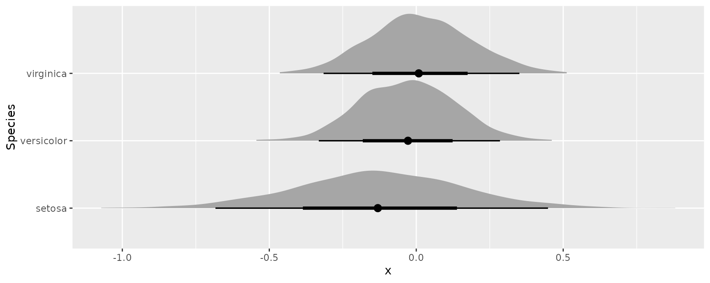

Bootstrap and Simulation-Based Inference (Experimental)
Source:vignettes/bootstrap.Rmd
bootstrap.Rmdmarginaleffects offers an experimental inferences() function to compute uncertainty estimates using the bootstrap and simulation-based inference.
WARNING: The inferences() function is experimental. It may be renamed, the user interface may change, or the functionality may migrate to arguments in other marginaleffects functions.
Consider a simple model:
library(marginaleffects)
mod <- lm(Sepal.Length ~ Petal.Width * Petal.Length + factor(Species), data = iris)We will compute uncertainty estimates around the output of comparisons(), but note that the same approach works with the predictions() and slopes() functions as well.
Delta method
The default strategy to compute standard errors and confidence intervals is the delta method. This is what we obtain by calling:
avg_comparisons(mod, by = "Species", variables = "Petal.Width")
#>
#> Term Contrast Species Estimate Std. Error z Pr(>|z|) 2.5 % 97.5 %
#> Petal.Width mean(+1) setosa -0.11025 0.2852 -0.3866 0.69903 -0.6692 0.4487
#> Petal.Width mean(+1) versicolor -0.02006 0.1600 -0.1254 0.90020 -0.3336 0.2935
#> Petal.Width mean(+1) virginica 0.02159 0.1689 0.1278 0.89830 -0.3095 0.3526
#>
#> Prediction type: response
#> Columns: type, term, contrast, Species, estimate, std.error, statistic, p.value, conf.low, conf.high, predicted, predicted_hi, predicted_loSince this is the default method, we obtain the same results if we add the inferences() call in the chain:
avg_comparisons(mod, by = "Species", variables = "Petal.Width") |>
inferences(method = "delta")
#>
#> Term Contrast Species Estimate Std. Error z Pr(>|z|) 2.5 % 97.5 %
#> Petal.Width mean(+1) setosa -0.11025 0.2852 -0.3866 0.69903 -0.6692 0.4487
#> Petal.Width mean(+1) versicolor -0.02006 0.1600 -0.1254 0.90020 -0.3336 0.2935
#> Petal.Width mean(+1) virginica 0.02159 0.1689 0.1278 0.89830 -0.3095 0.3526
#>
#> Prediction type: response
#> Columns: type, term, contrast, Species, estimate, std.error, statistic, p.value, conf.low, conf.high, predicted, predicted_hi, predicted_loBootstrap
marginaleffects supports three bootstrap frameworks in R: the well-established boot package, the newer rsample package, and the so-called “bayesian bootstrap” in fwb.
boot
avg_comparisons(mod, by = "Species", variables = "Petal.Width") |>
inferences(method = "boot")
#>
#> Term Contrast Species Estimate Std. Error 2.5 % 97.5 %
#> Petal.Width mean(+1) setosa -0.11025 0.2640 -0.6453 0.4257
#> Petal.Width mean(+1) versicolor -0.02006 0.1635 -0.3569 0.3094
#> Petal.Width mean(+1) virginica 0.02159 0.1824 -0.3373 0.3688
#>
#> Prediction type: response
#> Columns: type, term, contrast, Species, estimate, predicted, predicted_hi, predicted_lo, std.error, conf.low, conf.highAll unknown arguments that we feed to inferences() are pushed forward to boot::boot():
est <- avg_comparisons(mod, by = "Species", variables = "Petal.Width") |>
inferences(method = "boot", sim = "balanced", R = 500, conf_type = "bca")
est
#>
#> Term Contrast Species Estimate Std. Error 2.5 % 97.5 %
#> Petal.Width mean(+1) setosa -0.11025 0.2675 -0.6454 0.4568
#> Petal.Width mean(+1) versicolor -0.02006 0.1623 -0.4002 0.2860
#> Petal.Width mean(+1) virginica 0.02159 0.1764 -0.3918 0.3591
#>
#> Prediction type: response
#> Columns: type, term, contrast, Species, estimate, predicted, predicted_hi, predicted_lo, std.error, conf.low, conf.highWe can extract the original boot object from an attribute:
attr(est, "inferences")
#>
#> BALANCED BOOTSTRAP
#>
#>
#> Call:
#> bootstrap_boot(model = model, FUN = FUN, newdata = ..1, vcov = ..2,
#> variables = ..3, type = ..4, by = ..5, conf_level = ..6,
#> transform_pre = ..7, transform_post = ..8, wts = ..9, hypothesis = ..10,
#> eps = ..11)
#>
#>
#> Bootstrap Statistics :
#> original bias std. error
#> t1* -0.11025325 0.0045586201 0.2674781
#> t2* -0.02006005 0.0013626590 0.1623257
#> t3* 0.02158742 -0.0001131028 0.1764459Or we can extract the individual draws with the posterior_draws() function:
posterior_draws(est) |> head()
#> drawid draw type term contrast Species estimate predicted predicted_hi predicted_lo std.error conf.low conf.high
#> 1 1 0.1013044 response Petal.Width mean(+1) setosa -0.11025325 4.957514 4.901389 5.013640 0.2674781 -0.6454058 0.4567651
#> 2 1 0.1612896 response Petal.Width mean(+1) versicolor -0.02006005 6.327949 6.325011 6.330887 0.1623257 -0.4001554 0.2860225
#> 3 1 0.1889883 response Petal.Width mean(+1) virginica 0.02158742 7.015513 7.033528 6.997499 0.1764459 -0.3918296 0.3590503
#> 4 2 0.2424845 response Petal.Width mean(+1) setosa -0.11025325 4.957514 4.901389 5.013640 0.2674781 -0.6454058 0.4567651
#> 5 2 0.2192402 response Petal.Width mean(+1) versicolor -0.02006005 6.327949 6.325011 6.330887 0.1623257 -0.4001554 0.2860225
#> 6 2 0.2085070 response Petal.Width mean(+1) virginica 0.02158742 7.015513 7.033528 6.997499 0.1764459 -0.3918296 0.3590503
posterior_draws(est, shape = "DxP") |> dim()
#> [1] 500 3
rsample
As before, we can pass arguments to rsample::bootstraps() through inferences(). For example, for stratified resampling:
est <- avg_comparisons(mod, by = "Species", variables = "Petal.Width") |>
inferences(method = "rsample", R = 100, strata = "Species")
est
#>
#> Term Contrast Species Estimate 2.5 % 97.5 %
#> Petal.Width mean(+1) setosa -0.11025 -0.6411 0.4640
#> Petal.Width mean(+1) versicolor -0.02006 -0.3275 0.3075
#> Petal.Width mean(+1) virginica 0.02159 -0.3593 0.3685
#>
#> Prediction type: response
#> Columns: type, term, contrast, Species, estimate, predicted, predicted_hi, predicted_lo, conf.low, conf.high
attr(est, "inferences")
#> # Bootstrap sampling using stratification with apparent sample
#> # A tibble: 101 × 3
#> splits id estimates
#> <list> <chr> <list>
#> 1 <split [150/48]> Bootstrap001 <tibble [3 × 8]>
#> 2 <split [150/56]> Bootstrap002 <tibble [3 × 8]>
#> 3 <split [150/62]> Bootstrap003 <tibble [3 × 8]>
#> 4 <split [150/47]> Bootstrap004 <tibble [3 × 8]>
#> 5 <split [150/56]> Bootstrap005 <tibble [3 × 8]>
#> 6 <split [150/55]> Bootstrap006 <tibble [3 × 8]>
#> 7 <split [150/47]> Bootstrap007 <tibble [3 × 8]>
#> 8 <split [150/51]> Bootstrap008 <tibble [3 × 8]>
#> 9 <split [150/66]> Bootstrap009 <tibble [3 × 8]>
#> 10 <split [150/44]> Bootstrap010 <tibble [3 × 8]>
#> # … with 91 more rowsOr we can extract the individual draws with the posterior_draws() function:
posterior_draws(est) |> head()
#> drawid draw type term contrast Species estimate predicted predicted_hi predicted_lo conf.low conf.high
#> 1 1 -0.43115722 response Petal.Width mean(+1) setosa -0.11025325 4.957514 4.901389 5.013640 -0.6410537 0.4640277
#> 2 1 -0.09870885 response Petal.Width mean(+1) versicolor -0.02006005 6.327949 6.325011 6.330887 -0.3274594 0.3074966
#> 3 1 0.05480198 response Petal.Width mean(+1) virginica 0.02158742 7.015513 7.033528 6.997499 -0.3593370 0.3685307
#> 4 2 0.43052668 response Petal.Width mean(+1) setosa -0.11025325 4.957514 4.901389 5.013640 -0.6410537 0.4640277
#> 5 2 0.17060524 response Petal.Width mean(+1) versicolor -0.02006005 6.327949 6.325011 6.330887 -0.3274594 0.3074966
#> 6 2 0.05058433 response Petal.Width mean(+1) virginica 0.02158742 7.015513 7.033528 6.997499 -0.3593370 0.3685307
posterior_draws(est, shape = "PxD") |> dim()
#> [1] 3 100Fractional Weighted Bootstrap (aka Bayesian Boostrap)
The fwb package implements fractional weighted bootstrap (aka Bayesian bootstrap):
“fwb implements the fractional weighted bootstrap (FWB), also known as the Bayesian bootstrap, following the treatment by Xu et al. (2020). The FWB involves generating sets of weights from a uniform Dirichlet distribution to be used in estimating statistics of interest, which yields a posterior distribution that can be interpreted in the same way the traditional (resampling-based) bootstrap distribution can be.” -Noah Greifer
The inferences() function makes it easy to apply this inference strategy to marginaleffects objects:
avg_comparisons(mod) |> inferences(method = "fwb")
#>
#> Term Contrast Estimate Std. Error 2.5 % 97.5 %
#> Petal.Length +1 0.89295 0.08051 0.7295 1.0608
#> Petal.Width +1 -0.03624 0.16226 -0.3522 0.2781
#> Species versicolor - setosa -1.46293 0.33113 -2.1023 -0.7841
#> Species virginica - setosa -1.98424 0.38697 -2.7479 -1.2283
#>
#> Prediction type: response
#> Columns: type, term, contrast, estimate, std.error, conf.low, conf.highSimulation-based inference
This simulation-based strategy to compute confidence intervals was described in Krinsky & Robb (1986) and popularized by King, Tomz, Wittenberg (2000). We proceed in 3 steps:
- Draw
Rsets of simulated coefficients from a multivariate normal distribution with mean equal to the original model’s estimated coefficients and variance equal to the model’s variance-covariance matrix (classical, “HC3”, or other). - Use the
Rsets of coefficients to computeRsets of estimands: predictions, comparisons, or slopes. - Take quantiles of the resulting distribution of estimands to obtain a confidence interval and the standard deviation of simulated estimates to estimate the standard error.
Here are a few examples:
library(ggplot2)
library(ggdist)
avg_comparisons(mod, by = "Species", variables = "Petal.Width") |>
inferences(method = "simulation")
#>
#> Term Contrast Species Estimate Std. Error 2.5 % 97.5 %
#> Petal.Width mean(+1) setosa -0.100486 0.2758 -0.6226 0.4690
#> Petal.Width mean(+1) versicolor -0.008237 0.1597 -0.3162 0.3037
#> Petal.Width mean(+1) virginica 0.033753 0.1672 -0.2951 0.3531
#>
#> Prediction type: response
#> Columns: type, term, contrast, Species, estimate, std.error, conf.low, conf.high, predicted, predicted_hi, predicted_loSince simulation based inference generates R estimates of the quantities of interest, we can treat them similarly to draws from the posterior distribution in bayesian models. For example, we can extract draws using the posterior_draws() function, and plot their distributions using packages likeggplot2 and ggdist:
avg_comparisons(mod, by = "Species", variables = "Petal.Width") |>
inferences(method = "simulation") |>
posterior_draws("rvar") |>
ggplot(aes(y = Species, xdist = rvar)) +
stat_slabinterval()